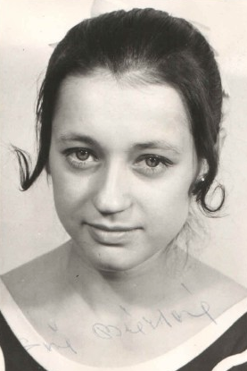

Sona Brazdova (CSSR)
1970 World Championships Team Bronze Medalist
1968 and 1972 Olympian

Medal Total
Competition Results
1968
Olympic Games: 5th Team
1969
Olympic Hopes (Druzhba): 6th Team, 4th B
1970
Chunichi Cup: 9th AA
CSSR Championships: 6th AA
CSSR-HUN Dual Meet: 1st Team, 9th AA
CSSR-ROM Dual Meet: 1st Team, 5th AA
World Championships: 3rd Team, 19th AA
1971
European Championships: 4th B, 4th FX, 5th V
Riga International: 7th AA, 5th B, 5th FX
1972
CSSR Championships: 2nd AA
Olympic Games: 24th AA
1973
Chunichi Cup: 7th AA
CSSR Championships: 3rd AA
CSSR-ROM Dual Meet: 1st Team, 3rd AA
European Championships: 7th AA, 5th FX, 6th V
1974
USA-CSSR Dual Meet: 1st Team, 1st AA
This page was created on August 17, 2020.
© Gymn Forum